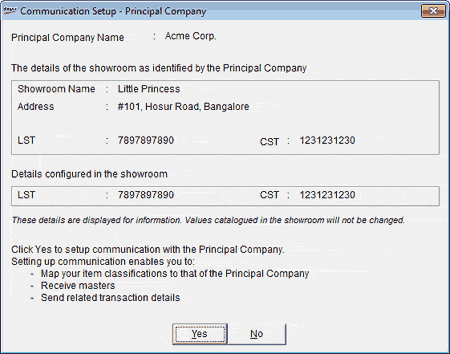
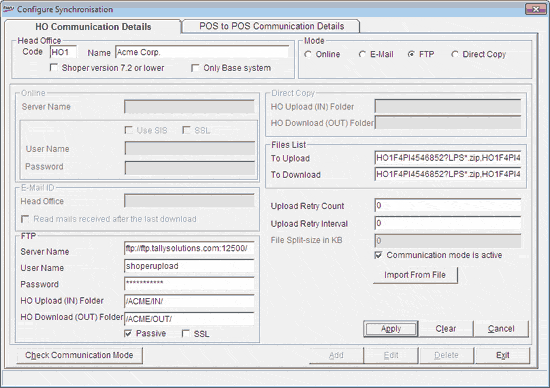

The Communication Setup - Principal Company window is as shown.

Name of the principal company with which you are establishing communication and details of the outlet as catalogued in the principal is displayed.
Details of the outlet sent by the principal includes:
Name of the showroom
Address
LST
CST
Additionally, the LST and CST as catalogued in your showroom is displayed.
The details are displayed for the purpose of information. The values configured at the showroom are not replaced with those sent by the principal.
The HO Communication Details tab is as shown.

The values from the configuration file are displayed in the HO Communication Details tab.